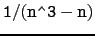
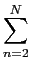
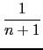
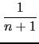
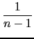
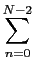
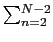
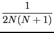

suivant: Somme de Riemann :
monter: Intégration
précédent: Primitive et intégrale définie
Table des matières
Index
Somme indicée finie et infinie et primitive discrète : sum
sum a deux, quatre ou cinq arguments :
Autes Exemples
On tape :
sum(k,k,2,6)
On obtient :
20
On tape :
sum(k,k,7,2)
On obtient :
-18
On tape :
sum(k,k,3,2)
On obtient :
0
On tape :
sum(1,k,-2,n)
On obtient :
n+1+2
On tape :
normal(sum(2*k-1,k,1,n))
On obtient :
n^2
On tape :
sum(1/(n^2),n,1,10)
On obtient :
1968329/1270080
On tape :
sum(1/(n^2),n,1,+(infinity))
On obtient :
pi^2/6
On tape :
sum((-1)^n/(2*n+1)!,n,0,+(infinity))
On obtient :
sin(1))
On tape :
sum(1/(3*n)!,n,0,+(infinity))
On obtient :
(2*cos((sqrt(3))/2)*exp(1/-2)+exp(1))/3
On tape :
sum(1/(n*2^n),n,1,+(infinity))
On obtient :
-(ln(1/2))
On tape :
sum((-1)^n/(2*n+1),n,0,+(infinity))
On obtient :
pi/4
On tape :
assume(x>0 && x<1);
sum(x^(2*n)/(2*n+1),n,0,+(infinity))
On obtient :
x,(-ln(-x+1)+ln(x+1))/(2*x)
On tape :
sum(1/(n^3-n),n,2,10)
On obtient :
27/110
On tape :
sum(1/(n^3-n),n,1,+(infinity))
On obtient :
1/4
Pour justifier ce résultat on décompose
, on tape :
partfrac(1/(n^3-n))
On obtient :
1/(2*(n+1))-1/n+1/(2*(n-1))
Donc quand on fait la somme de 2 à N on a :
 -  = -
= -   = -
 = -  -
-  -
- 
* = *() = *(1 + + )
* = *( + +  )
)
les termes
 se détruisent et il reste :
- + *(1 + ) - + *( + ) = - 
d'ou les résultat précédents :
- pour N = 10 la somme vaut :
1/4 - 1/220 = 27/110
- pour N = +  la somme vaut : 1/4 car
tend vers zéro quand N tend vers l'infini.
la somme vaut : 1/4 car
tend vers zéro quand N tend vers l'infini.
suivant: Somme de Riemann :
monter: Intégration
précédent: Primitive et intégrale définie
Table des matières
Index
Documentation de giac écrite par Renée De Graeve